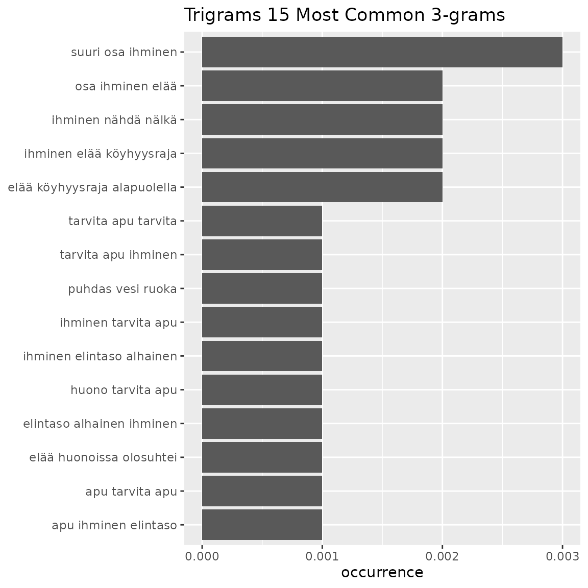
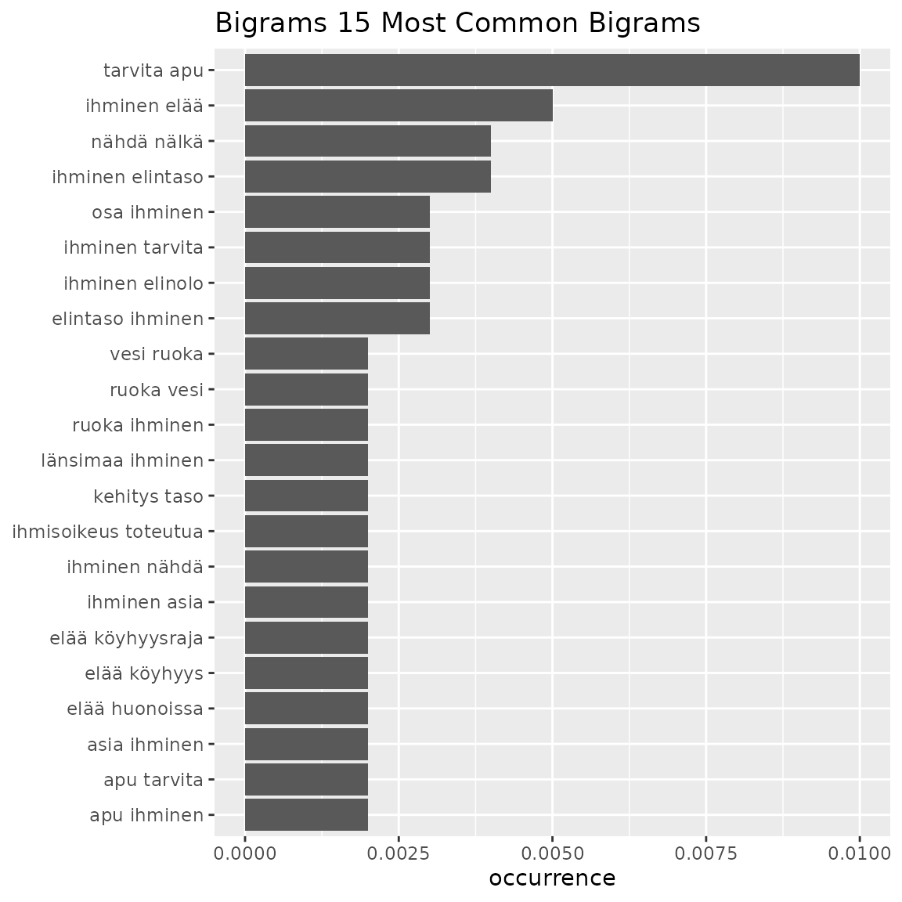
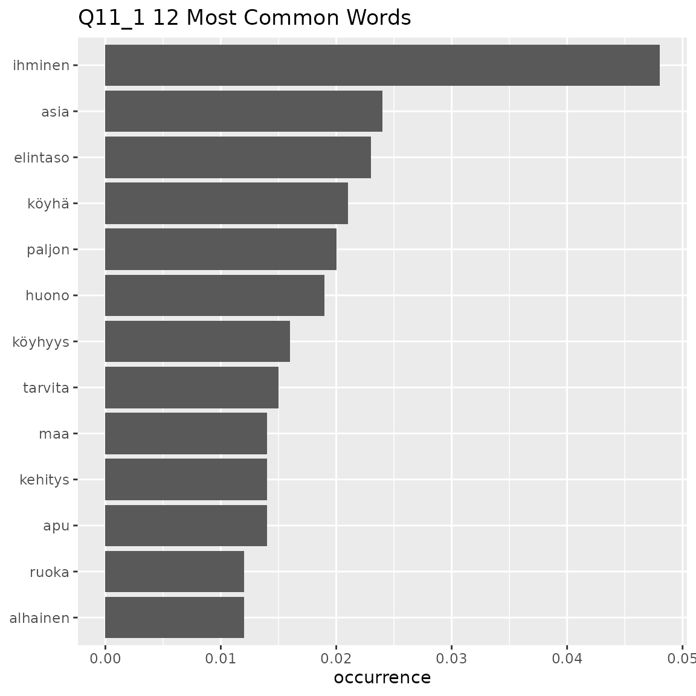
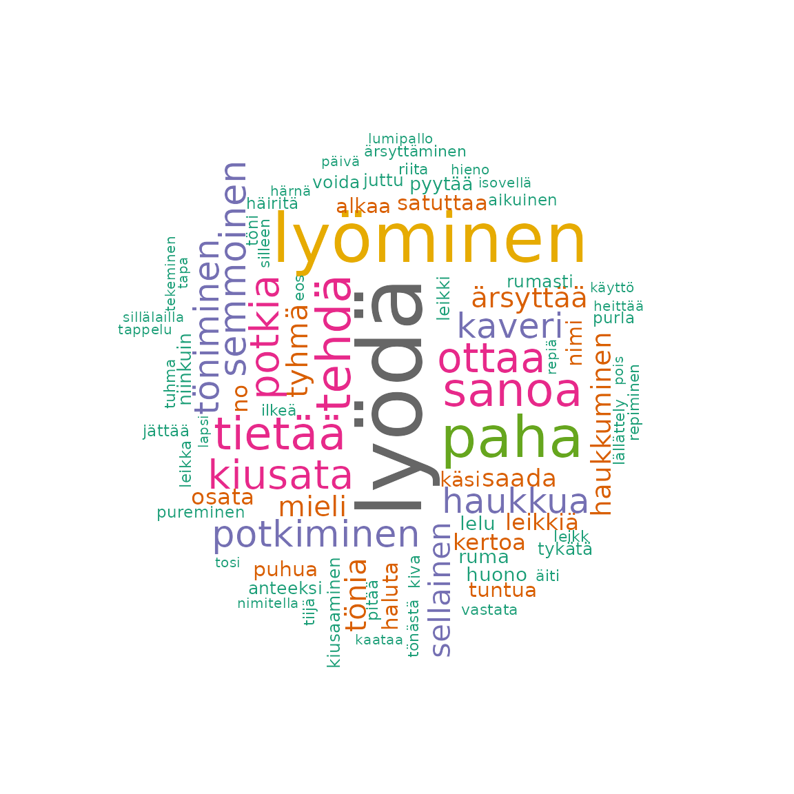
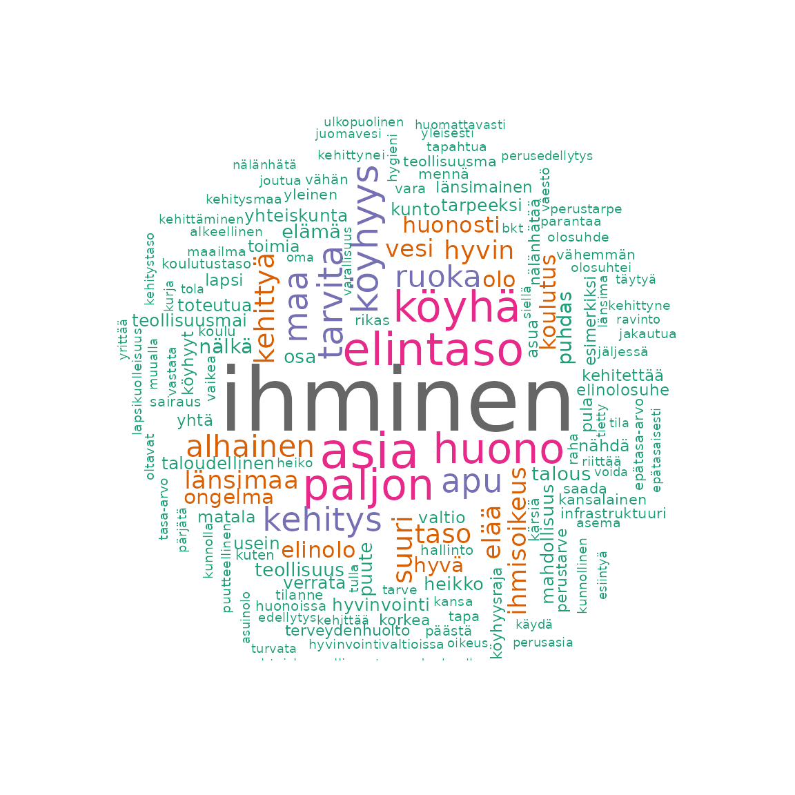

Tutorial2-Data_exploration
Tutorial2-Data_exploration.RmdIntroduction
Exploratory Data Analysis (EDA) is a common activity once data has been cleaned and prepared. EDA involves running functions which allow you to better understand the responses and begin to formulate initial hypotheses based on the data.
This tutorial follows on from Tutorial 1 and guides you through an
EDA of data which has been prepared into CoNLL-U format. These EDA
functions are contained in r/02_data_exploration.R.
Installation of package.
Once the package is installed, you can load the
finnsurveytext package as below: (Other required packages
such as dplyr and stringr will also be
installed if they are not currently installed in your environment.)
Data
There are two sets of data files available within the package which could be used in this tutorial. These files have been created following the process demonstrated in Tutorial 1. The suffixes ‘iso’, ‘nltk’ and ‘snow’ refer to the types of stopwords which have been removed during the data preparation activities.
2. Development Cooperation Data
- data/conllu_dev_q11_1.rda
- data/conllu_dev_q11_1_nltk.rda
- data/conllu_dev_q11_1_snow.rda
- data/conllu_dev_q11_2.rda
- data/conllu_dev_q11_2_nltk.rda
- data/conllu_dev_q11_3.rda
- data/conllu_dev_q11_3_nltk.rda
You can read these in as follows:
| doc_id | paragraph_id | sentence_id | sentence | token_id | token | lemma | upos | xpos | feats | head_token_id | dep_rel | deps | misc |
|---|---|---|---|---|---|---|---|---|---|---|---|---|---|
| doc1 | 1 | 1 | Jos kaveri tönii. | 2 | kaveri | kaveri | NOUN | N,Sg,Nom | Case=Nom|Number=Sing | 3 | nsubj | NA | NA |
| doc1 | 1 | 1 | Jos kaveri tönii. | 3 | tönii | tönia | VERB | V,Act,Ind,Pres,Sg3 | Mood=Ind|Number=Sing|Person=3|Tense=Pres|VerbForm=Fin|Voice=Act | 0 | root | NA | SpaceAfter=No |
| doc1 | 1 | 2 | Jos lyö. | 2 | lyö | lyödä | VERB | V,Act,Ind,Pres,Sg3 | Mood=Ind|Number=Sing|Person=3|Tense=Pres|VerbForm=Fin|Voice=Act | 0 | root | NA | SpaceAfter=No |
| doc1 | 1 | 3 | Jos tappelee. | 2 | tappelee | tapella | VERB | V,Act,Ind,Pres,Sg3 | Mood=Ind|Number=Sing|Person=3|Tense=Pres|VerbForm=Fin|Voice=Act | 0 | root | NA | SpaceAfter=No |
| doc2 | 1 | 1 | Kun nimitellään ja tönitään. | 2 | nimitellään | nimitellä | VERB | V,Pass,Ind,Pres | Mood=Ind|Tense=Pres|VerbForm=Fin|Voice=Pass | 0 | root | NA | NA |
| doc2 | 1 | 1 | Kun nimitellään ja tönitään. | 4 | tönitään | tönitä | VERB | V,Pass,Ind,Pres | Mood=Ind|Tense=Pres|VerbForm=Fin|Voice=Pass | 2 | conj | NA | SpaceAfter=No |
q11_1 <- conllu_dev_q11_1_nltkFUNCTIONS
Get Summary Table functions
fst_summarise_short() and
fst_summarise()
This first function creates a simple summary table for the data that shows the total number of words, number of unique words, and number of unique lemmas in the data. You can either view the table in the console, or define a variable which will contain this table.
The second function adds information about the number and proportion of survey respondents which answered this question.
fst_summarise_short(data = bullying)
#> Respondents Total Words Unique Words Unique Lemmas
#> 1 409 1240 469 364
q11_1_summary_table <- fst_summarise(data = q11_1, desc = "All")
knitr::kable(q11_1_summary_table)| Description | Respondents | No Response | Proportion | Total Words | Unique Words | Unique Lemmas |
|---|---|---|---|---|---|---|
| All | 945 | 24 | 0.98 | 4257 | 1513 | 1065 |
fst_summarise_short() and fst_summarise()
take 1 argument:
-
datais output from data preparation, prepared data in CoNLL-U format, such as the output offst_prepare_connlu().
fst_summarise() takes an optional second argument:
-
descis an optional string describing respondents. This description is included in the table in the first column. If not defined, it will default to ‘All respondents’.
Get Part-Of-Speech Summary Table function
This function creates a table which counts the number and proportion of words of each part-of-speech (POS) tag within the data. Again, you can either view the table in the console, or define a variable which will contain this table.
fst_pos(data = bullying)
#> UPOS UPOS_Name Count Proportion
#> 1 ADJ adjective 134 0.108
#> 2 ADP adposition 2 0.002
#> 3 ADV adverb 58 0.047
#> 4 AUX auxiliary 33 0.027
#> 5 CCONJ coordinating conjunction 1 0.001
#> 6 DET determiner 15 0.012
#> 7 INTJ interjection 15 0.012
#> 8 NOUN noun 441 0.356
#> 9 NUM numeral 2 0.002
#> 10 PART particle 13 0.010
#> 11 PRON pronoun 4 0.003
#> 12 PROPN proper noun 6 0.005
#> 13 VERB verb 514 0.415
#> 14 X other 2 0.002
q11_1_pos_table <- fst_pos(data = q11_1)
knitr::kable(q11_1_pos_table)| UPOS | UPOS_Name | Count | Proportion |
|---|---|---|---|
| ADJ | adjective | 664 | 0.156 |
| ADP | adposition | 65 | 0.015 |
| ADV | adverb | 399 | 0.094 |
| AUX | auxiliary | 29 | 0.007 |
| CCONJ | coordinating conjunction | 4 | 0.001 |
| DET | determiner | 79 | 0.019 |
| NOUN | noun | 2225 | 0.523 |
| NUM | numeral | 2 | 0.000 |
| PART | particle | 160 | 0.038 |
| PRON | pronoun | 47 | 0.011 |
| PROPN | proper noun | 18 | 0.004 |
| SCONJ | subordinating conjunction | 4 | 0.001 |
| SYM | symbol | 2 | 0.000 |
| VERB | verb | 552 | 0.130 |
| X | other | 7 | 0.002 |
fst_pos() takes 1 argument:
-
datais output from data preparation, prepared data in CoNLL-U format, such as the output offst_prepare_connlu().
Get Length Summary Table function
This function creates a table which summarises the distribution of lengths in the responses. Again, you can either view the table in the console, or define a variable which will contain this table.
fst_length_summary(data = bullying, desc = "All Bullying Respondents")
#> # A tibble: 2 × 8
#> Description Respondents Mean Minimum Q1 Median Q3 Maximum
#> <chr> <int> <dbl> <int> <dbl> <int> <dbl> <int>
#> 1 All Bullying Respondents… 409 5.36 1 2 4 7 37
#> 2 All Bullying Respondents… 409 1.22 1 1 1 1 6
q11_1_length_table <- fst_length_summary(data = q11_1, incl_sentences = FALSE)
knitr::kable(q11_1_length_table)| Description | Respondents | Mean | Minimum | Q1 | Median | Q3 | Maximum |
|---|---|---|---|---|---|---|---|
| All respondents- Words | 921 | 6.514658 | 1 | 3 | 5 | 8 | 33 |
fst_length_summary() takes 3 arguments:
-
datais output from data preparation, prepared data in CoNLL-U format, such as the output offst_prepare_connlu(). -
descis an optional string describing respondents. If not defined, it will remain blank in the table meaning that the ‘Description’ column will only show whether the row is showing data for words or sentences.
-
incl_sentencesis a boolean of whether to include sentence data in table, default isTRUE. Ifincl_sentences = TRUE, the table will also provide length information for the number of sentences within responses. Ifincl_sentences = FALSE, the table will show only show results for the number of words in responses.
Top Words and N-grams Tables
Next we will demonstrate some functions which are used to create plots of most frequent words and n-grams occurring in the data. An n-gram is a set of n successive words in the data.
Make Top Words Table function
This functions creates a table of the most frequently occurring words in the data (noting that “stopwords” may have been removed in previous data preparation steps.)
The top words tables is able have the words normalised if you choose.
The variable norm is the method for normalising the data.
Valid settings are 'number_words' (the number of words in
the responses, default), 'number_resp' (the number of
responses), or NULL (raw count returned).
Optionally, you can indicate which POS tags to include.
In this function, you must determine what you want to do in the case
of ties with the variable strict. Words with equal
occurrence are presented in alphabetial order. By default, words are
presented in order to the number cutoff word. This means
that equally-occurring later-alphabetically words beyond the cutoff word
will not be displayed. Alternatively, you can decide
that the cutoff is not strict, in which case words occurring equally
often as the number cutoff words will be
displayed. (fst_get_top_words() will print a message
regarding this decision.)
We run the functions as follows:
fst_get_top_words(data = bullying)
#> Note:
#> Words with equal occurrence are presented in alphabetical order.
#> By default, words are presented in order to the `number` cutoff word.
#> This means that equally-occurring later-alphabetically words beyond the cutoff word will not be displayed.
#> words occurrence
#> 1 lyödä 0.057
#> 2 lyöminen 0.043
#> 3 paha 0.035
#> 4 tehdä 0.027
#> 5 sanoa 0.027
#> 6 tietää 0.026
#> 7 ottaa 0.023
#> 8 kiusata 0.022
#> 9 potkia 0.022
#> 10 potkiminen 0.019
fst_get_top_words(
data = bullying,
number = 15,
norm = NULL,
pos_filter = c("NOUN", "VERB", "ADJ", "ADV"),
strict = FALSE
)
#> Note:
#> Words with equal occurrence are presented in alphabetical order.
#> With `strict` = FALSE, words occurring equally often as the `number` cutoff word will be displayed.
#> words occurrence
#> 1 lyödä 71
#> 2 lyöminen 53
#> 3 paha 42
#> 4 sanoa 33
#> 5 tehdä 33
#> 6 tietää 32
#> 7 ottaa 28
#> 8 potkia 27
#> 9 kiusata 26
#> 10 potkiminen 24
#> 11 haukkua 22
#> 12 kaveri 22
#> 13 töniminen 22
#> 14 tyhmä 17
#> 15 tönia 17
table1 <- fst_get_top_words(data = q11_1, number = 5)
#> Note:
#> Words with equal occurrence are presented in alphabetical order.
#> By default, words are presented in order to the `number` cutoff word.
#> This means that equally-occurring later-alphabetically words beyond the cutoff word will not be displayed.
knitr::kable(table1)| words | occurrence |
|---|---|
| ihminen | 0.048 |
| asia | 0.024 |
| elintaso | 0.023 |
| köyhä | 0.021 |
| paljon | 0.020 |
table2 <- fst_get_top_words(data = q11_1, number = 5, norm = "number_resp", pos_filter = c("NOUN", "VERB"), strict = FALSE)
#> Note:
#> Words with equal occurrence are presented in alphabetical order.
#> With `strict` = FALSE, words occurring equally often as the `number` cutoff word will be displayed.
knitr::kable(table2)| words | occurrence |
|---|---|
| ihminen | 0.217 |
| asia | 0.108 |
| elintaso | 0.098 |
| köyhyys | 0.070 |
| tarvita | 0.066 |
fst_get_top_words() takes 4 arguments:
-
datais output from data preparation, prepared data in CoNLL-U format, such as the output offst_prepare_connlu(). -
numberis the number of top words/n-grams to return, default is10which means that the top 10 words will be returned. -
normis the method for normalising the data. Valid settings are'number_words'(the number of words in the responses, default),'number_resp'(the number of responses), orNULL(raw count returned). -
pos_filteris an optional list of which POS tags to include such as'c("NOUN", "VERB", "ADJ", "ADV")'. The default isNULL, in which case all words in the data are considered. -
strictis a boolean that determines how the function will deal with ‘ties’. Ifstrict = TRUE, the table will cut-off at the exactnumber(words are presented in alphabetical order so later-alphabetically, equally occurring words to the word atnumberwill not be shown.) Ifstrict = FALSE, the table will show any words that occur equally frequently as the number cutoff word.
Make Top N-Grams Table function
Similar to fst_get_top_words(), this functions creates a
table of the most frequently occurring n-grams in the data (noting that
“stopwords” may have been removed in previous data preparation
steps.)
The top n-grams tables are able have the n-grams normalised if you
choose. The variable norm is the method for normalising the
data. Valid settings are 'number_words' (the number of
words in the responses, default), 'number_resp' (the number
of responses), or NULL (raw count returned).
Optionally, you can indicate which POS tags to include.
In this function, you must determine what you want to do in the case
of ties with the variable strict. N-grams with equal
occurrence are presented in alphabetial order. By default, n-grams are
presented in order to the number cutoff n-gram. This means
that equally-occurring later-alphabetically n-grams beyond the cutoff
n-gram will not be displayed. Alternatively, you can
decide that the cutoff is not strict, in which case n-grams occurring
equally often as the number cutoff n-gram
will be displayed. (fst_get_top_ngrams()
will print a message regarding this decision. There is another function
fst_get_top_ngrams2() which doesn’t print a message. This
function is used within the comparison functions in
04_comparison_functions.R)
We run the functions as follows:
fst_get_top_ngrams(data = bullying, ngrams = 2)
#> Note:
#> N-grams with equal occurrence are presented in alphabetical order.
#> By default, n-grams are presented in order to the `number` cutoff n-gram.
#> This means that equally-occurring later-alphabetically n-grams beyond the cutoff n-gram will not be displayed.
#> words occurrence
#> 1 lyöminen potkiminen 0.013
#> 2 lyödä potkia 0.010
#> 3 osata sanoa 0.007
#> 4 paha mieli 0.006
#> 5 tehdä paha 0.006
#> 6 potkia lyödä 0.005
#> 7 pyytää anteeksi 0.005
#> 8 töniminen lyöminen 0.005
#> 9 haukkuminen lyöminen 0.004
#> 10 ottaa käsi 0.004
fst_get_top_ngrams(data = bullying, ngrams = 2, norm = "number_words", strict = FALSE)
#> Note:
#> N-grams with equal occurrence are presented in alphabetical order.
#> With `strict` = FALSE, n-grams occurring equally often as the `number` cutoff n-gram will be displayed.
#> words occurrence
#> 1 lyöminen potkiminen 0.013
#> 2 lyödä potkia 0.010
#> 3 osata sanoa 0.007
#> 4 paha mieli 0.006
#> 5 tehdä paha 0.006
#> 6 potkia lyödä 0.005
#> 7 pyytää anteeksi 0.005
#> 8 töniminen lyöminen 0.005
#> 9 haukkuminen lyöminen 0.004
#> 10 ottaa käsi 0.004
#> 11 ottaa leikki 0.004
#> 12 ottaa lelu 0.004
#> 13 tietää lyödä 0.004
#> 14 tuntua paha 0.004
table3 <- fst_get_top_ngrams(data = q11_1, number = 15, ngrams = 3)
#> Note:
#> N-grams with equal occurrence are presented in alphabetical order.
#> By default, n-grams are presented in order to the `number` cutoff n-gram.
#> This means that equally-occurring later-alphabetically n-grams beyond the cutoff n-gram will not be displayed.
knitr::kable(table3)| words | occurrence |
|---|---|
| suuri osa ihminen | 0.003 |
| ihminen nähdä nälkä | 0.002 |
| elää köyhyysraja alapuolella | 0.002 |
| ihminen elää köyhyysraja | 0.002 |
| osa ihminen elää | 0.002 |
| tarvita apu ihminen | 0.001 |
| ihminen elintaso alhainen | 0.001 |
| ihminen tarvita apu | 0.001 |
| apu tarvita apu | 0.001 |
| puhdas vesi ruoka | 0.001 |
| tarvita apu tarvita | 0.001 |
| apu ihminen elintaso | 0.001 |
| elintaso alhainen ihminen | 0.001 |
| elää huonoissa olosuhtei | 0.001 |
| huono tarvita apu | 0.001 |
table4 <- fst_get_top_ngrams(data = q11_1, number = 15, ngrams = 2, pos_filter = c("NOUN", "VERB"), strict = FALSE)
#> Note:
#> N-grams with equal occurrence are presented in alphabetical order.
#> With `strict` = FALSE, n-grams occurring equally often as the `number` cutoff n-gram will be displayed.
knitr::kable(table4)| words | occurrence |
|---|---|
| tarvita apu | 0.010 |
| ihminen elää | 0.005 |
| ihminen elintaso | 0.004 |
| nähdä nälkä | 0.004 |
| osa ihminen | 0.003 |
| ihminen elinolo | 0.003 |
| ihminen tarvita | 0.003 |
| elintaso ihminen | 0.003 |
| apu ihminen | 0.002 |
| ihminen nähdä | 0.002 |
| ihmisoikeus toteutua | 0.002 |
| ruoka vesi | 0.002 |
| kehitys taso | 0.002 |
| apu tarvita | 0.002 |
| elää köyhyysraja | 0.002 |
| vesi ruoka | 0.002 |
| asia ihminen | 0.002 |
| elää huonoissa | 0.002 |
| elää köyhyys | 0.002 |
| ihminen asia | 0.002 |
| länsimaa ihminen | 0.002 |
| ruoka ihminen | 0.002 |
fst_get_top_ngrams() has the same setup as
fst_get_top_words() plus an additional argument
ngrams:
-
datais output from data preparation, prepared data in CoNLL-U format, such as the output offst_prepare_connlu(). -
numberis the number of top words/n-grams to return, default is10which means that the top 10 n-grams will be returned. -
ngramsis the type of n-grams. The default is “1” (so top words). Setngrams = 2to get bigrams andn = 3to get trigrams etc. -
normis the method for normalising the data. Valid settings are'number_words'(the number of words in the responses, default),'number_resp'(the number of responses), orNULL(raw count returned). -
pos_filteris an optional list of which POS tags to include such as'c("NOUN", "VERB", "ADJ", "ADV")'. The default isNULL, in which case all words in the data are considered. -
strictis a boolean that determines how the function will deal with ‘ties’. Ifstrict = TRUE, the table will cut-off at the exactnumber(n-grams are presented in alphabetical order so later-alphabetically, equally occurring n-grams to the n-gram atnumberwill not be shown.) Ifstrict = FALSE, the table will show any n-grams that occur equally frequently as the number cutoff n-gram.
Make Top Words/N-grams Tables functions
This functions plots the results of
fst_get_top_words().
fst_freq_plot(table = table1, number = 5, name = "Table 1")The arguments are:
-
tableis the output offst_get_top_wordsorfst_get_top_ngrams() -
numberThe number of words/n-grams, default is10. -
nameis an optional “name” for the plot, default isNULL
Make Top N-grams Tables functions
This functions plots the results of
fst_get_top_ngrams().
fst_ngrams_plot(table = table3, number = 15, ngrams = 3, "Trigrams")
fst_ngrams_plot(table = table4, number = 15, ngrams = 2, "Bigrams")
The arguments are:
-
tableis the output offst_get_top_wordsorfst_get_top_ngrams() -
numberThe number of words/n-grams, default is10. -
nameis an optional “name” for the plot, default isNULL -
ngramsis the type of n-grams. As you can see above, you can plot top words usingngrams = 1.
Find and Plot Top Words function
This functions runs fst_get_top_words() and
fst_freq_plot() within one function:
fst_freq(data = q11_1, number = 12, strict = FALSE, name = "Q11_1")
#> Note:
#> Words with equal occurrence are presented in alphabetical order.
#> With `strict` = FALSE, words occurring equally often as the `number` cutoff word will be displayed.
The arguments are as defined in the component functions:
-
datais output from data preparation, prepared data in CoNLL-U format, such as the output offst_prepare_connlu(). -
numberis the number of top words/n+grams to return, default is10. -
normis the method for normalising the data. Valid settings are'number_words'(the number of words in the responses, default),'number_resp'(the number of responses), orNULL(raw count returned). -
pos_filteris an optional list of which POS tags to include such as'c("NOUN", "VERB", "ADJ", "ADV")'. The default isNULL, in which case all words in the data are considered. -
strictis a boolean that determines how the function will deal with ‘ties’. Ifstrict = TRUE, the table will cut-off at the exactnumber(words are presented in alphabetical order so later-alphabetically, equally occurring words to the word atnumberwill not be shown.) Ifstrict = FALSE, the table will show any words that occur equally frequently as the number cutoff word. -
nameis an optional “name” for the plot, default isNULL
Find and Plot Top N-Grams function
This functions runs fst_get_top_ngrams() and
fst_ngrams_plot() within one function:
fst_ngrams(data = bullying, number = 12, ngrams = 2)
#> Note:
#> N-grams with equal occurrence are presented in alphabetical order.
#> By default, n-grams are presented in order to the `number` cutoff n-gram.
#> This means that equally-occurring later-alphabetically n-grams beyond the cutoff n-gram will not be displayed.The arguments are as defined in the commponent functions:
-
datais output from data preparation, prepared data in CoNLL-U format, such as the output offst_prepare_connlu(). -
numberis the number of top words/n+grams to return, default is10. -
ngramsis the type of n-grams. The default is “1” (so top words). Setngrams = 2to get bigrams andn = 3to get trigrams etc. -
normis the method for normalising the data. Valid settings are'number_words'(the number of words in the responses, default),'number_resp'(the number of responses), orNULL(raw count returned). -
pos_filteris an optional list of which POS tags to include such as'c("NOUN", "VERB", "ADJ", "ADV")'. The default isNULL, in which case all words in the data are considered. -
strictis a boolean that determines how the function will deal with ‘ties’. Ifstrict = TRUE, the table will cut-off at the exactnumber(n-grams are presented in alphabetical order so later-alphabetically, equally occurring n-grams to the n-gram atnumberwill not be shown.) Ifstrict = FALSE, the table will show any n-grams that occur equally frequently as the number cutoff word.
Make Wordcloud function
This function will create a wordcloud plot for the data. There is an option to select only specific word types (POS tag).
fst_wordcloud(data = bullying)
fst_wordcloud(
data = q11_1,
pos_filter = c("NOUN", "VERB", "ADJ", "ADV"),
max = 150
)
fst_wordclouds() takes 3 arguments:
-
datais output from data preparation, prepared data in CoNLL-U format, such as the output offst_prepare_connlu(). -
pos_filteris an optional list of POS tags for inclusion in the wordcloud. The defaul isNULL. -
maxis the maximum number of words to display, the default is100.
Conclusion
EDA of open-ended survey questions can be conducted using functions
in r/02_data_exploration.R such as finding most frequent
words and n-grams, summarising the length of responses and words used,
and visualising responses in word clouds. The results of this EDA can
help researchers better understand their data, create hypotheses based
on this initial insights, and inform future analysis of the surveys.
Citation
The Office of Ombudsman for Children: Child Barometer 2016 [dataset]. Version 1.0 (2016-12-09). Finnish Social Science Data Archive [distributor]. http://urn.fi/urn:nbn:fi:fsd:T-FSD3134
Finnish Children and Youth Foundation: Young People’s Views on Development Cooperation 2012 [dataset]. Version 2.0 (2019-01-22). Finnish Social Science Data Archive [distributor]. http://urn.fi/urn:nbn:fi:fsd:T-FSD2821